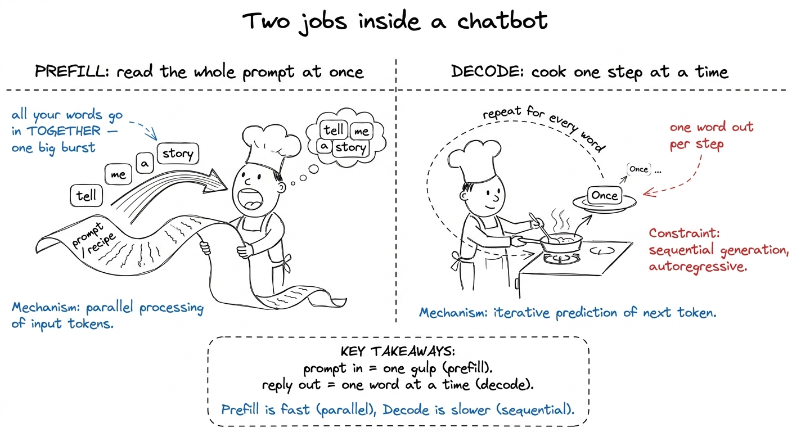
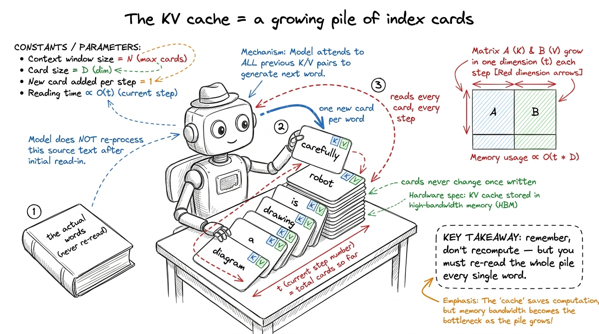
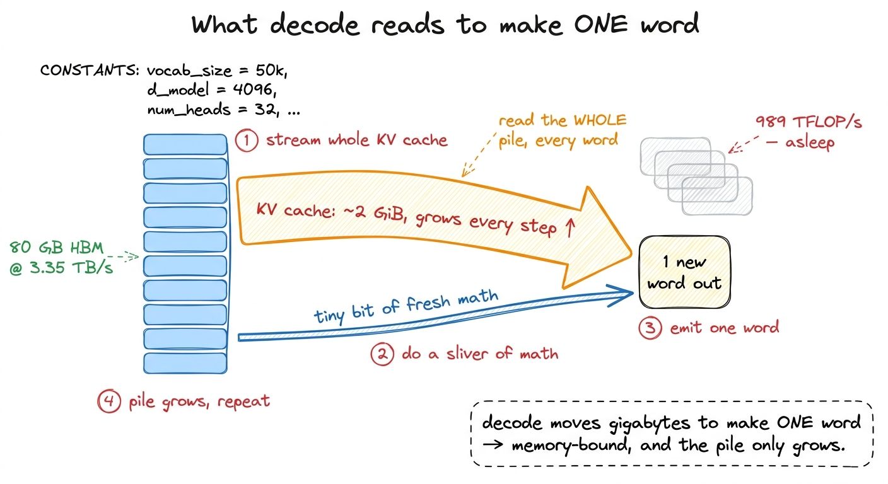
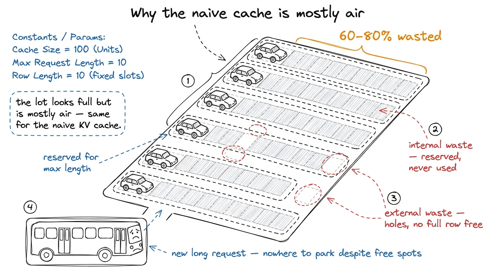
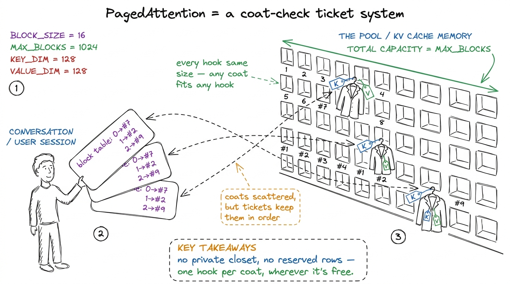
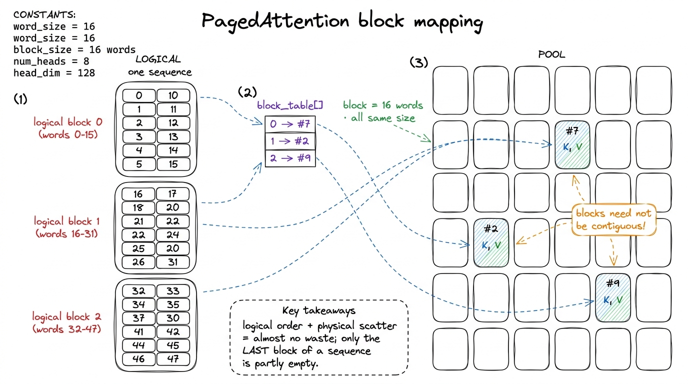

Teaching the KV cache: why chat is memory-bound
By the end of this chapter you'll be able to stand at a whiteboard and teach the most surprising fact about how chatbots work: making a model chat is not a math problem, it's a memory problem. You'll explain what the KV cache is, why every new word forces the machine to re-read a growing pile of memory, and how one trick borrowed from operating systems — PagedAttention — stopped that pile from wasting half your GPU. You need no prior knowledge of transformers. You need one good metaphor, one honest number, and the patience to reveal it in the right order.
Write one sentence at the top of the board and leave it up the whole time: training a model is a compute problem; serving one is a memory problem. The rest of this chapter is that sentence, made concrete.
Two jobs hiding inside one chatbot
When you hit send, the machine does two very different jobs, back to back. Students think it's one smooth process. It isn't. Teach the split first, because everything else hangs off it.
Job one is prefill. The model reads your whole prompt at once — every word you typed — and works out the first word of its reply. All your words go in together, in one big gulp.
Job two is decode. Now the model writes its reply one word at a time: writes a word, looks at everything so far, writes the next word, looks again. Word by word, until it's done. Every word after the first is a decode step.

figure rendering · The chatbot does two jobs: read the whole prompt at once, then write tHold that picture. The whole chapter is about why the second job — the slow word-by-word cooking — is where all the pain lives.
The naive way is insane: re-reading the whole book every word
Here's what makes chat expensive. To write its next word, the model looks back at every word that came before — your prompt plus everything it has said. That "looking back" is the attention mechanism; you don't need its details today, only one fact: each new word depends on all previous words.
Now imagine doing that the naive way. To write word 100, you re-read words 1–99. To write word 500, you re-read 499 words. The re-reading gets longer every step. The total work grows like the square of the length — a 1000-word reply is about half a million word-reads. That's hopeless.
The KV cache: don't recompute, remember
The fix is the obvious human one: don't re-read — keep notes.
When the model processes a word, it produces two little summary vectors for it: a key and a value — "what this word offers to future words." The trick: once computed, a word's key and value never change. Word 7's key is word 7's key forever. So compute them once and stash them in a running list. That list is the KV cache — the K (keys) and V (values) for every word so far.

figure rendering · The KV cache turns re-reading the book into flipping through a pile ofThis turns the exploding square-cost back into something linear: each step, a little fresh work plus one read of the growing list. But look at the price you just paid — it's the crux of the whole chapter.
A real number, so it lands with weight
Vague "it's a lot of memory" won't move a room. Give them the actual size.
Take a real-ish model: an 8192-word context, 8 KV heads, head dimension 128, 2-byte numbers. Per layer the keys take 8192 × 8 × 128 × 2 bytes = 16 MiB, and the values another 16 MiB — 32 MiB per layer. A real model stacks about 64 layers. So:
per layer: K = 16 MiB, V = 16 MiB → 32 MiB
× 64 layers ≈ 2 GiBTwo gigabytes of cache — for one conversation. Every decode step reads the whole thing.

figure rendering · Every decode step drags the entire KV cache across memory to make a siWhere the naive cache bleeds memory
The cache is big and unavoidable. But the first way anyone stores it is also wasteful, and the waste sets up the fix. Two problems, both about not knowing how long the reply will be.
Problem one: you reserve for the worst case. You don't know if a reply will be 10 words or 4000, so the naive code reserves one giant contiguous slab sized for the maximum, up front, for every request. A request that stops after 10 words has paid for thousands of empty slots. This reserved-but-never-used space is internal fragmentation.
Problem two: leftover holes. Conversations start and finish at different times, freeing oddly-sized gaps. A new long conversation arrives, and even with plenty of total free memory, there's no single contiguous run big enough. That's external fragmentation.

figure rendering · The naive cache reserves whole rows for the worst case and leaves unusPagedAttention: give the cache a page table
Now the payoff — a delightful idea, stolen from operating systems, and students love that. You don't need to teach virtual memory; the metaphor carries it.
The fix: stop demanding that a conversation's cache live in one contiguous slab. Chop all the KV memory up front into a big pool of small, identical blocks — each holding the cards for a fixed handful of words (commonly 16). Give each conversation a little lookup list, a block table: "my first 16 words live in block #7, my next 16 in block #2, my next 16 in block #9." Those blocks can be scattered anywhere. The conversation thinks its cards are in a neat row; physically they're sprinkled all over. This trick is PagedAttention.

figure rendering · Each conversation holds a fistful of tickets (the block table) pointin
figure rendering · The technical translation of the coat check: a block table maps a convThe waste almost vanishes. No reserving for the worst case — you grab a new block only when the conversation grows into it. No unusable holes — every block is the same size, so any free block fits any conversation. The only leftover waste is each conversation's last, partly-filled block. That 60–80% you were bleeding? You get most of it back, and reclaimed KV memory turns almost directly into more users served.
1 If a student asks "can we make the cards themselves smaller?" — yes, and it's the next frontier. Storing the cache in 8-bit numbers (FP8) instead of 16-bit halves the bytes, which halves the memory-read time and doubles how many conversations fit. Architectural tricks like grouped-query attention (that "8 KV heads" above) and DeepSeek's compressed attention cut the number of cards you keep at all. Paging, FP8, and compression stack — they each attack a different chunk of the same enemy: bytes moved.
You can now teach
- The two jobs inside a chatbot — prefill (read the whole prompt at once) and decode (write the reply one word at a time) — as a chef reading a recipe, then cooking step by step.
- Why the naive "re-read everything each word" approach explodes as the square of the length, demonstrated by hand (0+1+2+3+4 = 10).
- The KV cache as a growing pile of index cards — "remember, don't recompute" — and the twist that you must still re-read the whole pile every single word.
- Why decode is memory-bound, with the number that lands it: ~2 GiB of cache per conversation, a ~600-microsecond floor per word, tensor cores asleep.
- Where the naive cache bleeds (internal + external fragmentation, 60–80% wasted) as a parking lot that reserves whole rows.
- PagedAttention as a coat-check ticket system — scattered blocks, a block table of tickets — and why it recovers the waste to serve ~3× more users, plus the confusion-fix that it's about capacity, not per-word speed.